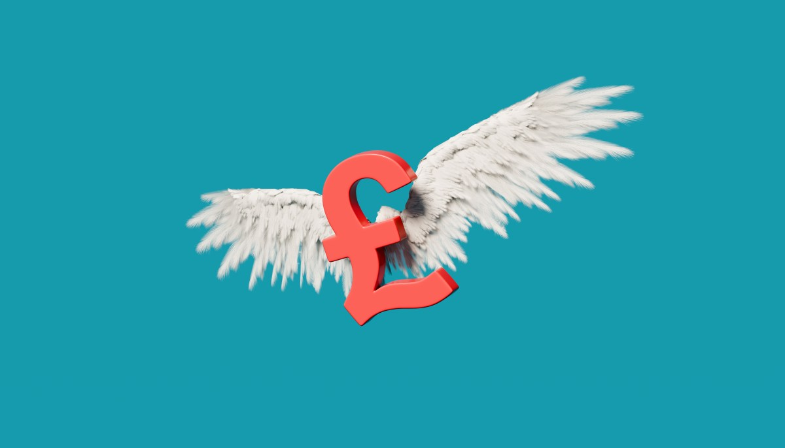
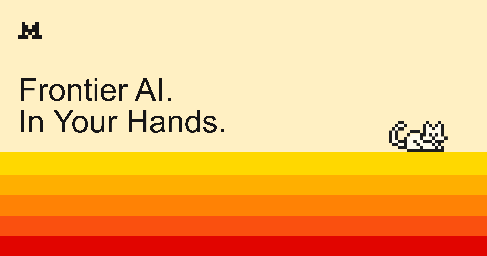
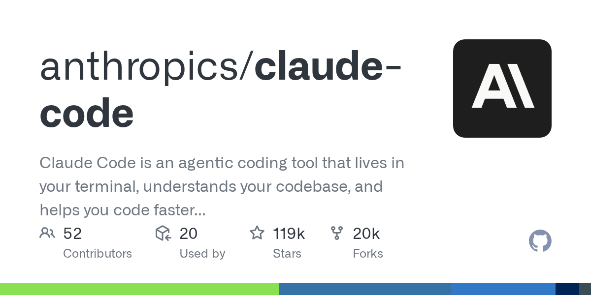

N°24 DeepMind 王牌 David Silver 創 Ineffable Intelligence · 募 11 億美賭 RL 不靠人類資料

Pin · AlphaGo 之父帶著 11 億美元下車，賭的是 LLM scaling 不會是終局。
發生什麼
TechCrunch 報導：David Silver（AlphaGo、AlphaZero、AlphaStar 的核心研究者）三個月前低調離開 Google DeepMind，創辦 Ineffable Intelligence。新一輪由 Lightspeed Venture Partners 與 Sequoia Capital 共同領投，募資總額 11 億美元、投後估值 51 億美元。創辦團隊多數來自 DeepMind 強化學習線。
Ineffable Intelligence 的對外定位是「打造一個不依賴人類資料就能持續學習的 AI 系統」——把 reward signal 與 self-play 從 game / sim 環境延伸到通用任務。Silver 在 2024 年那篇〈Welcome to the Era of Experience〉立場文中已經寫過這個方向：模型不該再被人類資料的天花板綁住，而是要靠與環境互動產生的經驗自我演化。新公司的研究路線是這篇文章的工程化版本。
11 億美元、種子加首輪一次到位，是純 AI lab 賽道少見的開局規模。對比 Mira Murati 的 Thinking Machines（首輪約 7 億美元）、Ilya Sutskever 的 Safe Superintelligence（10 億美元），Ineffable 這把出價已經把「離職的明星 PI 」這個身分定價到天花板。
為什麼重要
第一，「post-LLM scaling」第一次拿到機構級子彈。過去兩年「LLM scaling 還沒撞牆」是矽谷主流敘事，所有大筆資金都往 GPU 與 pretraining run 集中。Silver 拿 11 億美元押反方，等於是 Lightspeed 與 Sequoia 用真金白銀對 LLM scaling 進行對沖。它們不是說 LLM 會死，而是說「最大化 reward 路線」可能在下一個 24 個月內出現第一個非 LLM 的前沿系統。
第二，DeepMind 與 Google 的人才護城河被再次切開一道口子。過去 12 個月離開 DeepMind 自立門戶的高階研究者（Mustafa Suleyman 進 Microsoft、Tim Brooks 進 OpenAI、現在的 Silver）已經明顯影響到 Gemini 後續迭代節奏。Google Cloud 拿下五角大廈擴大合約那一邊正在加速商業化，但 frontier research 那一端正在流血。
第三，估值錨會傳染到 Tier-2 lab。51 億美元估值對純 research stage（無產品、無客戶、無收入）的 lab 是新的天花板。下一輪 Series B 的 frontier lab，估值對標只會更高。
我們的判斷
三個看點：
(1) Ineffable 的第一個技術 demo 會被市場當作「LLM scaling 是否撞牆」的代理指標。無論 Silver 端出來的是 RL on simulator、self-play coding agent 還是 robotics 控制器，外界都會用它的能力曲線去校準「LLM 是不是該換棒」這個議題。建議把 Ineffable 的官方部落格與 arXiv 紀錄列入定期巡檢清單。
(2) Anthropic、OpenAI 的策略發言會出現「post-training is all you need」與「new paradigm」兩派內鬨。Silver 這條線會逼前沿 lab 的領導層在公開場合表態自己的 roadmap 偏哪一派；過去半年那種「我們什麼都做」的模糊回答會變得越來越貴。
(3) Nvidia 的 GPU 訂單敘事會被重新解讀。如果 RL paradigm 真的吃掉一部分 frontier research 預算，single-run pretraining 的 GPU 集群採購會被分散到更多 sim/agent farm 部署，Nvidia 的 CSP 客戶結構會變得更碎。下一份 Nvidia 法說會問答區，這題八成會被分析師端上來。
N°25 OpenAI 解套 Microsoft 獨家權 · 模型登 AWS Bedrock 50B 大餅開吃

Pin · OpenAI 終於把脖子上的繩子鬆開一格，多雲時代正式進入結算季。
發生什麼
TechCrunch 兩篇接連報導：第一篇 4 月 27 日，Microsoft 同意放棄對 OpenAI 模型的獨家轉售權，改採營收分潤——OpenAI 之後可以把 frontier 模型直接賣給其他超大型雲端業者，Microsoft 從「唯一通路」退到「優先通路」。第二篇 4 月 28 日，AWS 在不到 24 小時內把新版 OpenAI 模型上架到 Bedrock，連同一個全新的 managed agent service 開賣，初期合約規模對外揭露為 50 億美元。
從合約結構看，Microsoft 獨家解綁的條件包含：（1）OpenAI 仍承諾把 Azure 列為「優先 inference 供應」、（2）Microsoft 持續享有特定模型代際的代理銷售權、（3）營收分潤從原本的 75/25 改為更彈性的 stack-by-stack 拆帳。AWS 則用 Bedrock Managed Agents 這條 stack 把 OpenAI 模型直接打進企業 ETL、客服、coding agent 三條線。
Sam Altman 與 AWS CEO Matt Garman 接受 Stratechery 採訪時都把這場合作稱作「multi-cloud 時代的開檯」。從訂單流動方向看，這也意味著 Microsoft 在過去兩年「OpenAI = Azure 唯一引擎」的故事正式收場。
為什麼重要
第一，OpenAI 的雲端定價權回到自己手上。過去兩年 Azure 是 OpenAI 對外計費的單一窗口，Microsoft 取走相當比例的 spread。多雲解綁後，OpenAI 對 enterprise 的議價結構徹底改變——同一個 token 價格在 AWS、Azure、GCP 之間的差距會被逐步抹平。
第二，Anthropic 對 AWS 的依賴瞬間不再對等。Anthropic 與 AWS 過去是「資金 + 算力」深度綁定，AWS 把 Claude 當 Bedrock 旗艦。如今 Bedrock 同時上架 OpenAI 並推自家 managed agents stack，Claude 在 AWS 內部的優先級會被稀釋——加上 Anthropic 與 Google 的 400 億美元投資，Anthropic 的算力來源結構未來 6 個月會被 reshape。
第三，Microsoft 的 AI 故事被迫升級。Microsoft 不能再講「我們有 OpenAI 獨家」，必須回去講 Copilot 產品力、自家模型（MAI 系列）、Azure 平台與 Foundry stack。前一週 Microsoft 才把 VibeVoice 開源、加碼 Foundry Marketplace，背景動機現在看起來明顯——是在獨家解綁前先把「自己也能講」的故事補滿。
我們的判斷
三個看點：
(1) Bedrock Managed Agents 會成為 enterprise agent 的預設採購視窗。過去 enterprise 要買「能跑業務流程的 agent」，得自己拼 LangGraph、CrewAI、Temporal 等開源框架。AWS 把 OpenAI 模型 + agent runtime + 觀測台 + 帳單一次包好，採購門檻被一次性拉低。下一輪 enterprise RFP 會把「Bedrock 相容」直接寫進需求。
(2) Microsoft 必須把 Copilot 從「OpenAI 套殼」升級為「跨模型 orchestrator」。當 OpenAI 模型在 AWS 也買得到，Microsoft 的 Copilot 必須端出單一獨家價值——多模型 routing、Office 深度整合、企業合規 stack。下一個 Build 大會的主題八成會繞著「Copilot 是 platform 不是 wrapper」打。
(3) frontier 模型的「雲端中立」會變成銷售必備話術。Anthropic 上週已被 Vertex 與 Bedrock 同時上架；OpenAI 跟上；Mistral、Cohere、xAI 預期半年內全部跟進。雲端不再是模型的歸屬地，而是 distribution channel。「我跑在哪一朵雲」這個問題 6 個月後對開發者就不存在。
N°26 Mistral Medium 3.5 發布 · vibe coding 與 remote agents 直接砸向中型開源價位

Pin · 中型模型的 agent 能力與旗艦差距，又被歐洲開源派砍掉一刀。
發生什麼
Mistral 4 月 28 日發布 Medium 3.5，主打兩條 stack：第一條是 remote agents——把工具呼叫、長 context、多步驟規劃整合進雲端 runtime；第二條是 vibe coding——在 IDE 中直接以 natural language 指令驅動 codebase 改寫、測試與部署。發布當天即在自家 La Plateforme、Hugging Face、Vertex AI 三邊上架，價格定位低於 GPT-4.1 mini 與 Claude Sonnet 4.5 約 30%。Hacker News 一日衝 357 pts、178 則留言。
從 Mistral 公布的 benchmark 看，Medium 3.5 在 SWE-bench Verified 與 Terminal-Bench 兩條 coding agent 主流榜單，已經與 6 個月前的旗艦 Large 模型同水位；在 GAIA agent benchmark 也僅落後 Claude Sonnet 4.5 約 4 分。對中型模型來說，這是把「足夠用」的標準往上推了一格。
Mistral 同時把 Medium 3.5 的 weights 提供給「特定開源研究合作對象」——雖未走完整 open weights 發行，但比起前代「全閉源」已經明顯讓步。HN 討論帶頭的幾條評論集中在「中型模型已經夠寫商業 SaaS 後端」這個觀察點。
為什麼重要
第一，coding agent 的單位成本被歐洲玩家進一步壓縮。過去半年 Claude Sonnet 4.x 與 GPT-5 mini 在 IDE agent 場景拿走多數市占；Mistral 用低 30% 的價格與 OpenAI/Anthropic 「同水位但便宜」的定位切入。對 Cursor、Cline、Cody 這類 IDE agent 廠商來說，多增一個可選 provider 就多一張議價牌。
第二，「中型模型 + 強 agent runtime」是新標準形狀。Mistral Medium 3.5 + remote agents 把過去「要用 frontier 才能跑 agent」的假設正式打破。大量中型模型只要搭配良好的 tool use、planning loop 與環境，就能完成 80% 的企業流程自動化。frontier 模型的差異化必須往 reasoning 深度與 multimodal 走。
第三，歐洲 AI 主權敘事拿到具體商業彈藥。Mistral 是法國旗手，Medium 3.5 同步上 Vertex 與 La Plateforme，等於對歐盟 enterprise 客戶交出「不依賴美國雲、不依賴美國模型」的完整 stack。這條故事在歐盟 AI Act 全面落地前 6 個月會被反覆引用。
我們的判斷
三個看點：
(1) IDE agent 廠商會在 Q3 內把 Mistral 列為預設可選 provider。Cursor 與 Continue 過去多以 Claude 為預設，Mistral Medium 3.5 的成本曲線足以讓他們把「Mistral」加進預設下拉選單，給用戶一條「便宜也夠用」的路線。短期會壓低 Anthropic Claude Sonnet 的單位營收。
(2) frontier lab 會被迫把「reasoning 加深」當差異化主軸。當中型模型已經能跑 agent，frontier 模型的售價要撐住，就必須端出 mid-to-long horizon planning、多 agent collaboration、深度 reasoning chain 等不可被中型模型平替的能力。下一代 Claude Opus、GPT-5 系列的故事重心會明顯往「能想得更遠」這條軸轉。
(3) 開源 vs 半開源的中間地帶會更熱鬧。Mistral 的「給特定研究夥伴 weights」這條路徑，預期會被 Cohere、AI21、阿里通義、智譜等同時跟進。完全閉源 vs 完全開源的二分法會被「分層 license」取代——這對企業客戶選 model 會帶來新的合規評估維度。
N°27 Anthropic Claude Code 計費 bug 多扣 200 美拒退 · HN 一夜 756 pts 炎上

Pin · 連續第二天踩到 Anthropic 的客服與計費信任地雷。
發生什麼
Claude Code 用戶在 GitHub repo `anthropics/claude-code` 開出 issue #53262：使用 HERMES.md 一個內建工作流時，背景多輪 tool call 觸發 token 重複計費，單一帳號一天被多扣約 200 美元。提交者附上完整 token usage log 與支援工單來回截圖，重點在於 Anthropic 客服回覆「按計費規則無誤、不予退款」，而非承認 bug。issue 在台灣時間清晨被推上 Hacker News，一夜衝到 756 pts、296 則留言。
留言群分三派：第一派是被類似情況咬過的 Claude Code 重度用戶，分享自己也遇到「同一個 prompt 重複跑」「context 自動展開後爆 token」的計費黑箱；第二派是同行廠商的工程師，比對自家 metering 方式；第三派則討論 Claude Code 的計費透明度與 OpenAI、Cursor、Cline 的對比。
Anthropic 在 issue 區的官方第一個回覆出現在事發後約 9 小時，承諾會檢視 HERMES.md 流程的計費邏輯，但仍未承諾退款。HN 上有用戶自掏腰包寫了 token-usage diff 工具，證實 HERMES.md 流程確實會多算一輪 system reminder。
為什麼重要
第一，前沿廠商的計費透明度第一次被排上檯面。過去兩年大家糾結模型能力與價格表單價，沒人認真盯 metering 細節。當每個用戶月費從幾十美元升到幾百美元，metering 一個 bug 就是多扣三位數美金的事。HN 把這個議題放大後，competitor（OpenAI、Cursor、Cline、Cohere）會被反問同樣問題。
第二，「客服第一句話」被定價了。真正點燃這把火的不是 bug 本身，而是 Anthropic 客服那句「按計費規則無誤」。在開發者社群裡，這種預設「先擋退款」的回覆，對品牌的傷害遠超過實際 200 美元損失。對比同期 GitHub Copilot 計費爭議（4/28 已被 AI DESK 寫進 News）的態度，差距明顯。
第三，這是 Anthropic 連續第二天上 HN 頭條，方向都不利。前一天是 Claude.ai 全站掛點 incident 9L93X2HT4S5W，這一天是計費 bug 拒退；中間夾著拒簽五角大廈 → Google 補位的政治新聞。三件事疊加會讓「Anthropic 是不是運營能力跟不上模型能力」成為下一週固定的市場話題。
我們的判斷
三個看點：
(1) Claude Code 的留存率會在這一週出現可量測下降。計費爭議與服務中斷對開發者的離開門檻最低——只要 IDE agent 換掉 default provider 就能跳船。Cursor 與 Continue 已經支援多 provider，這一週是 Claude Code 對手免費搶用戶的窗口。
(2) Anthropic 必須在 7 天內端出 metering 透明度承諾。否則這條 issue 會被反覆引用到下一輪企業合約談判桌。建議方向至少包含：公開 token-usage log API、退款 SOP 公開、針對 HERMES.md / sub-agent / system reminder 等隱性 token 消耗給出明確 disclaimer。
(3) 第三方 metering 與成本治理工具會出現新的需求高峰。Helicone、LangSmith、OpenLLMetry 這類觀測類工具在過去 12 個月以「debug」為主軸；接下來「成本與計費對賬」會成為新一條主敘事。對企業客戶來說，自帶獨立 metering 已經從「nice to have」變成 procurement 必選。
· 編輯台 · 明天 07:00 再見 ·